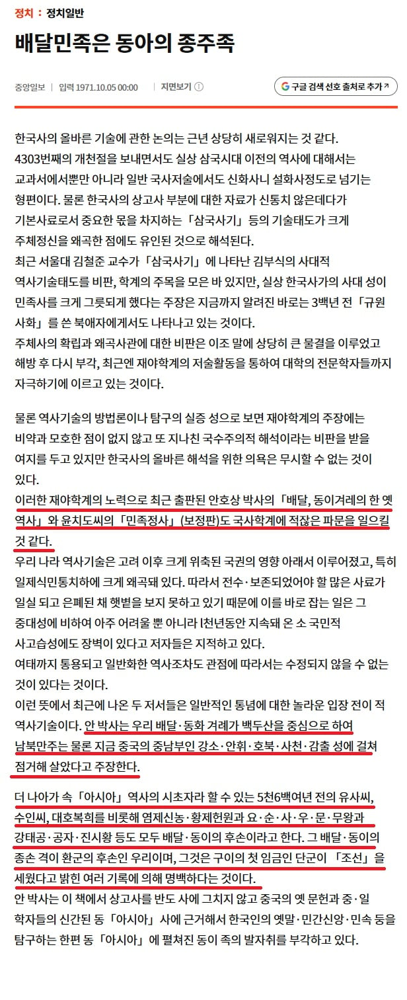

중국에서 자주나오는 말이
한국인이 공자를 한국인이라고 우긴다라는 건데
이 이야기의 근거는 어디서 나오는걸까?
대한민국 초대 문교부장관이자 독립운동가
안호상

https://www.joongang.co.kr/article/1303611
안호상의 저서 배달, 동이겨레의 한 옛 역사」에서
「아시아」역사의 시초자라 할 수 있는 5천6백여년 전의 유사씨, 수인씨, 대호복희를 비롯해 염제신농·황제헌원과 요·순·사·우·문·무왕과 강태공·공자·진시황 등도 모두 배달·동이의 후손이고, 그 배달·동이의 종손 격이 환군의 후손인 우리라고 주장함
즉 안호상 박사가 "중국의 고대 인물 상당수가 동이족 계열"이라는 독자적인 역사관을 펼쳤고, 이것이 "공자가 한국인"이라는 이야기의 씨앗이 됨
일반 개인이 말한거면 그냥 헛소리로 치부하고 넘어갔을텐데 하필 초대 문교부장관을 지낸 인물이 저렇게 주장해서 더 큰 논란이 됨
다르게 비유하면 중국의 초대 교육부 부장이
단군, 고주몽, 광개토대왕, 을지문덕, 대조영등이 모두 중원 한족의 후손이라고 주장하는거
위에 누가 말했듯 지금 중국의 오해가 저기에서 연원했다는건 다른 소리고 별개의 논증이 필요하단다
당장 위내용만봐도 공자 진시황등이 동이족이고 우리가 그 동이족의 종손인 환족에서 우리가 갈라져 나왔다는 내용인데
그것만으로 어떻게 우리가 공자는 ‘한국인’이다! 라고 주장하는걸로 논리가 점프하는지 설명가능하니?
우리의 선조중 공자가 있다랑 공자는 한국인이다 이게 진지하게 같은 말이라고 생각해서 그러는거?
한국인은 공자가 지들 나라 사람인줄 안다라고 말하는 중국인에게 안호상 얘기하면 아는사람이 몇명이나 있을거라 생각하니?
어깨위에 달린거 장식아니면 인터넷에 누가 찌끄리는거 그대로 믿지말고 좀 생각이란걸하자